FuzzBench: nov-15 report
warning
Please consider this as a preliminary report to
demonstrate the capabilities of FuzzBench. While we have
tried our best, we have not confirmed that we configured
everything correctly. We are hoping to work together
with the community to validate results and improve the
set of fuzzers, benchmarks, and their configurations in
the future.
See FAQ
for more details.
experiment summary
We show two different aggregate (cross-benchmark) rankings of fuzzers. The first is based on the average of per-benchmarks scores, where the score represents the percentage of the highest reached median coverage on a given benchmark (higher value is better). The second ranking shows the average rank of fuzzers, after we rank them on each benchmark according to their median reached covereges (lower value is better).By avg. score
| average normalized score | |
|---|---|
| fuzzer | |
| aflplusplus | 100.00 |
| fairfuzz | 75.27 |
| afl | 66.09 |
| afldark | 65.74 |
By avg. rank
| average rank | |
|---|---|
| fuzzer | |
| aflplusplus | 1.0 |
| fairfuzz | 2.0 |
| afl | 3.5 |
| afldark | 3.5 |
-
Critical difference diagramThe diagram visualizes the average rank of fuzzers (second ranking above) while showing the significance of the differences as well. What is considered a "critical difference" (CD) is based on the Friedman/Nemenyi post-hoc test. See more in the documentation.
Note: If a fuzzer does not support all benchmarks, its ranking as shown in this diagram can be lower than it should be. So please check the list of supported benchmarks for the fuzzer(s) of your interest. The list could be specified in the fuzzer's README.md like this.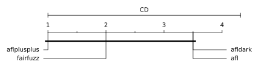
-
Median coverages on each benchmark
fuzzer afl afldark aflplusplus fairfuzz benchmark freetype2-2017 19656 20081 26179 20140 libxml2-v2.9.2 7031 6745 12315 9064
freetype2-2017 summary
Ranking by median reached coverage
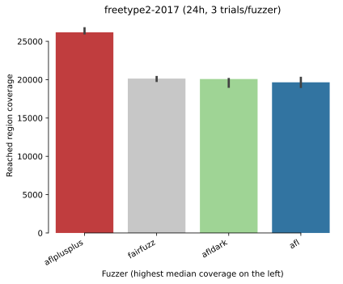Reached coverage distribution
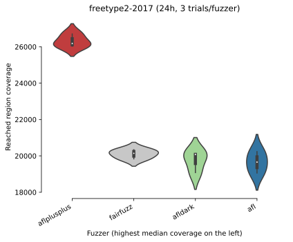Mean coverage growth over time
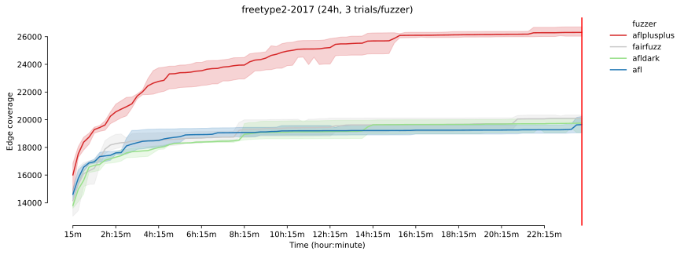Mean coverage growth over time
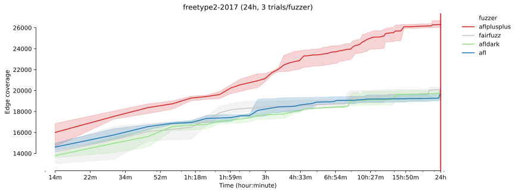
* The error bands show the 95% confidence interval
around the mean coverage.
-
Sample statistics and statistical significance
Coverage sample statistics
count mean std min 25% median 75% max fuzzer time aflplusplus 86400 3.0 26307.000000 351.914762 26037.0 26108.0 26179.0 26442.0 26705.0 fairfuzz 86400 3.0 20105.666667 253.251522 19837.0 19988.5 20140.0 20240.0 20340.0 afldark 86400 3.0 19748.333333 577.061811 19082.0 19581.5 20081.0 20081.5 20082.0 afl 86400 3.0 19650.000000 589.022920 19058.0 19357.0 19656.0 19946.0 20236.0
Mann-Whitney U test 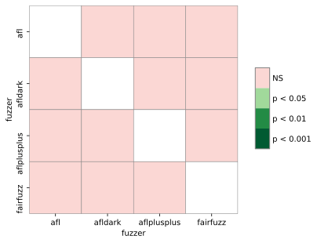 The table summarizes the p values of pairwise Mann-Whitney U tests. Green cells indicate that the reached coverage distribution of a given fuzzer pair is significantly different.
-
Unique coverage plots
Ranking by unique regions covered 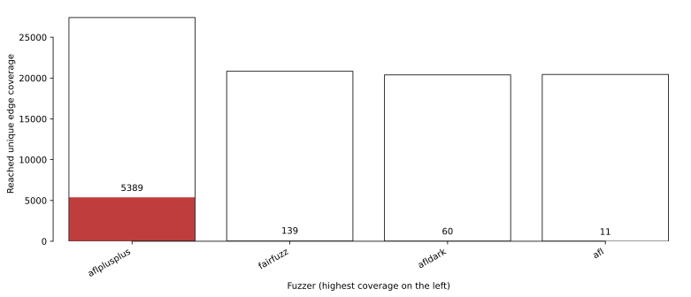 Each bar shows the total number of regions found by a given fuzzer. The colored area shows the number of unique regions (i.e., regions that were not covered by any other fuzzers).
Pairwise unique coverage 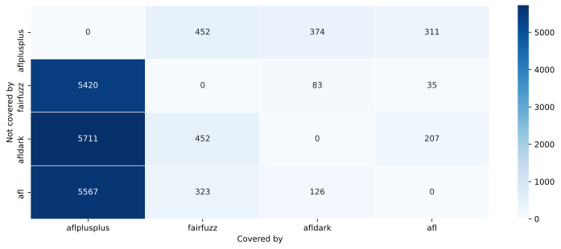 Each cell represents the number of regions covered by the fuzzer of the column but not by the fuzzer of the row
-
Coverage reports for each fuzzer on this benchmark
libxml2-v2.9.2 summary
Ranking by median reached coverage
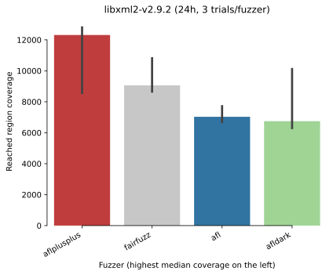Reached coverage distribution
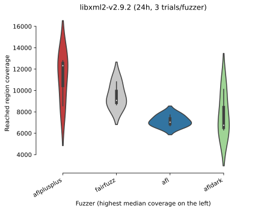Mean coverage growth over time

Mean coverage growth over time
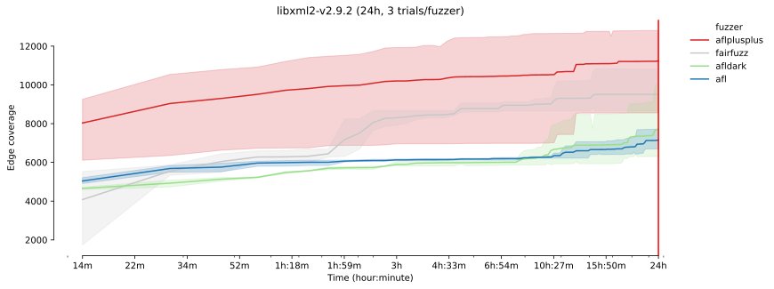
* The error bands show the 95% confidence interval
around the mean coverage.
-
Sample statistics and statistical significance
Coverage sample statistics
count mean std min 25% median 75% max fuzzer time aflplusplus 86400 3.0 11229.000000 2320.169821 8565.0 10440.0 12315.0 12561.0 12807.0 fairfuzz 86400 3.0 9512.000000 1146.633769 8657.0 8860.5 9064.0 9939.5 10815.0 afl 86400 3.0 7147.333333 519.365318 6696.0 6863.5 7031.0 7373.0 7715.0 afldark 86400 3.0 7721.333333 2086.498582 6302.0 6523.5 6745.0 8431.0 10117.0
Mann-Whitney U test The table summarizes the p values of pairwise Mann-Whitney U tests. Green cells indicate that the reached coverage distribution of a given fuzzer pair is significantly different.
-
Unique coverage plots
Ranking by unique regions covered 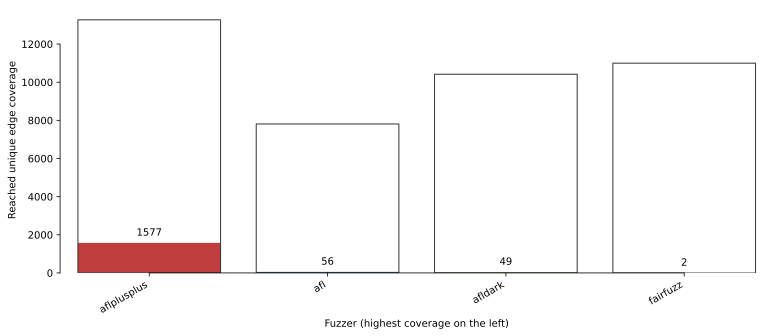 Each bar shows the total number of regions found by a given fuzzer. The colored area shows the number of unique regions (i.e., regions that were not covered by any other fuzzers).
Pairwise unique coverage 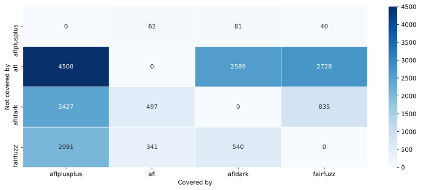 Each cell represents the number of regions covered by the fuzzer of the column but not by the fuzzer of the row
-
Coverage reports for each fuzzer on this benchmark
experiment data
You can download the raw data for this report here.Check out the documentation on how to create customized reports using this data. Also see some example Colab notebooks for doing custom analysis on the data here.
The experiment was conducted using this FuzzBench commit: 4a39e31951ff2b205a3491ef99f1419ff3fd7f9b
Experiment Description:
(None,)